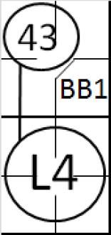
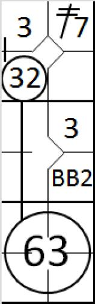
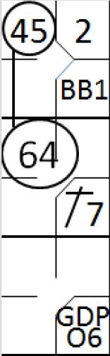
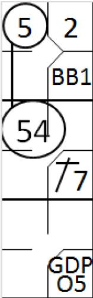
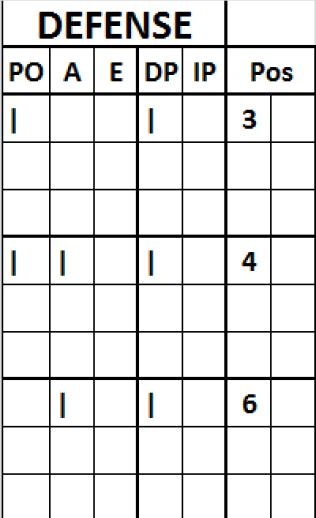

Double jeu et triple jeu
.
En accord avec la définition des termes de l’OBR, un double ou triple jeu est «
un jeu au cours duquel l’équipe défensive retire deux ou trois attaquants, lors d’une même séquence de jeu, pourvu qu’il n’y ait aucune erreur entre les retraits.
».
 «
Le scoreur officiel doit attribuer une participation à un double ou à un triple jeu à tout joueur défensif
qui mérite un retrait ou une assistance lorsque deux ou trois joueurs offensifs sont retirés depuis
l
e
moment du lancer jusqu’à ce que la balle soit déclarée morte ou soit en possession du lanceur en
position de lancer, à moins qu’il ait erreur ou un mauvais jeu entre les retraits
»
[OBR
9
.11]
.
«
Le scoreur officiel doit attribuer une participation à un double ou à un triple jeu à tout joueur défensif
qui mérite un retrait ou une assistance lorsque deux ou trois joueurs offensifs sont retirés depuis
l
e
moment du lancer jusqu’à ce que la balle soit déclarée morte ou soit en possession du lanceur en
position de lancer, à moins qu’il ait erreur ou un mauvais jeu entre les retraits
»
[OBR
9
.11]
.
En conséquence, sur la feuille de scorage (Colonne ‘DP’ sur la partie défensive de la feuille) la participation à un double jeu ou à un triple jeu doit être créditée à chaque joueur ayant participé à ce jeu.
IMPORTANT :
Il faut garder à l’esprit qu’une erreur ou un mauvais jeu (même s’il n’est pas considéré comme une erreur) casse un double jeu.
Le symbole utilisé est un cercle pour indiquer chaque retrait et un trait qui relie tous les cercles.
«
Le scoreur officiel doit créditer d’un double ou triple jeu, si un jeu d’appel, une fois que la balle est en possession du lanceur, entraîne un retrait supplémentaire
»
[OBR 9.11, Comment].
 Le nombre total de double jeu ou triple jeu effectué par chaque équipe doit être noté dans la case situé à côté des statistiques des lanceurs à la droite des mots « Double-jeu ». Au niveau de la ligne des totaux défensif, dans la colonne ‘DP’, on doit trouver le nombre de participation à un double ou triple jeu.
Le nombre total de double jeu ou triple jeu effectué par chaque équipe doit être noté dans la case situé à côté des statistiques des lanceurs à la droite des mots « Double-jeu ». Au niveau de la ligne des totaux défensif, dans la colonne ‘DP’, on doit trouver le nombre de participation à un double ou triple jeu.
-
Un double jeu forcé
re
nversé
[OBR définition des termes]. «
Un double jeu forcé renversé est un jeu au cours duquel le premier retrait est un jeu forcé et le deuxième retrait est effectué sur un coureur qui n’est plus forcé à cause du premier retrait. Exemple de double jeu forcé renversé : Un coureur est en première base et il y a un retrait ; le batteur frappe une balle roulante au joueur de première base qui touche sa base (1er retrait) et relaie la balle au joueur de 2ème base pour le second retrait (joueur à toucher)
».
Dès que le joueur le plus éloigné du marbre est retiré, le coureur le plus proche du marbre n’est plus forcé d’avancer et doit être touché.
Pour ce type de jeu, on utilise le même symbolisme qu’un jeu forcé.
-
Double jeu sur une frappe au sol
– C’est une action à charge contre le batteur quand la situation sur le terrain respecte les critères suivants :
-
Il y a moins de deux retraits.
-
Un ou plusieurs coureurs sont forcés d’avancer (ou en jeu forcé renversé).
Le scoreur officiel ne doit pas créditer le batteur sur une frappe roulante entraînant un double jeu si le batteur-coureur est déclaré retiré
suite à une
interférence d'un précédent coureur
[OBR 9.02 (a) (17) Commentaire]
.
 Le symbole utilisé pour indiquer que l’on attribue à un batteur un double jeu sur une frappe au sol est ‘GDP’ écrit dans le cercle qui indique le retrait du batteur, ou, dans la case correspondant à la première base si ce batteur atteint la première base. A chaque fois que le scoreur attribut un ’GDP’ à un batteur, il doit le noter dans la zone des statistiques d’attaque de ce batteur dans la colonne GDP.
Le symbole utilisé pour indiquer que l’on attribue à un batteur un double jeu sur une frappe au sol est ‘GDP’ écrit dans le cercle qui indique le retrait du batteur, ou, dans la case correspondant à la première base si ce batteur atteint la première base. A chaque fois que le scoreur attribut un ’GDP’ à un batteur, il doit le noter dans la zone des statistiques d’attaque de ce batteur dans la colonne GDP.

Exemple 1 :
Avec la première base occupée, le batteur frapper une ‘Line drive’ qui est rattrapé par le défenseur de la deuxième base.
Le coureur qui avait quitté la première base, tente de la rejoindre, mais il est touché par le joueur de la première base assisté par le joueur de la deuxième base qui lui a relayé la balle. C’est bien un double jeu, mais on ne le compte pas comme un ‘GDP’ puisque la balle frappé n’a pas touché le sol.

Exemple 2 :
Avec un coureur sur la deuxième base, le batteur frappe une balle au sol qui vers le défenseur arrêt-court, qui rattrape la balle et touche le coureur qui tentait de rejoindre la troisième base, puis relance la balle au défenseur de la première base pour faire le retrait du batteur-coureur. Ce n’est pas un ‘GDP’ puisque le coureur de la deuxième n’était pas forcé d’avancer.
 Exemple 3 :
La première base est occupée et le batteur à deux ‘strike’ à son compte. Sur le lancer suivant, le coureur tente de voler la deuxième base. Le lancer est un troisième ‘strike’ ce qui signifie que le batteur est retiré sur un ‘strike out’.
Exemple 3 :
La première base est occupée et le batteur à deux ‘strike’ à son compte. Sur le lancer suivant, le coureur tente de voler la deuxième base. Le lancer est un troisième ‘strike’ ce qui signifie que le batteur est retiré sur un ‘strike out’.
Le receveur relance la balle au défenseur de la deuxième base à temps pour que ce défenseur puisse retirer le coureur quand il tente son vol de base.
Clairement, il n’y a pas eu de frappe, ce n’est donc pas un ‘GDP’. Par contre, c’est bien un double jeu puisque les deux retraits sont effectués dans la même action et ceci sans erreurs.

Exemple 4 :
Avec la deuxième et troisième base occupées, le troisième batteur frappe une balle qui touche le sol vers le défenseur arrêt-court, qui peut relayer à temps la balle vers le défenseur de la première base pour retirer le batteur coureur.
Les deux coureurs en profite pour avancer et le coureur le plus avancer tente de rejoindre le marbre.
Le défenseur de la première base relaye la balle au receveur à temps pour retirer ce coureur.
Dans cet exemple, la défense est crédité d’un double jeu mai, comme le coureur n’étais pas forcé d’avancé vers le marbre, on ne note pas un ‘GDP’. Chaque défenseur est crédité d’une participation à un double jeu.


Exemple 5.a :
Avec la première base et la deuxième base occupée, le batteur frappe une balle au sol vers le défenseur de la troisième base, ce qui permet de retirer le coureur qui était obligé d’avancer, et complète le double jeu en renvoyant la balle à temps au défenseur de la deuxième base pour retirer le deuxième coureur.
Le batteur se voit donc attribuer un ‘GDP’, même s’il n’a pas été retiré.
Exemple 5.b : Avec la première base et la deuxième base occupée, le batteur frappe une balle au sol vers le défenseur de la position arret-court qui relaye au défenseur de la deuxième base, ce qui permet de retirer le coureur arrivant de la première base qui était obligé d’avancer. Le défenseur de la deuxième base complète le double jeu en renvoyant la balle à temps au défenseur de la troisième base pour retirer le coureur le plus avancé. C’est donc un double jeu renversé
Le batteur se voit donc aussi attribuer un ‘GDP’, même s’il n’a pas été retiré.
 Exemple 6 :
Avec un coureur sur la première base, le batteur frappe une balle au sol qui est rattrapée par le défenseur arr
êt-court et qui la relaye à temps au défenseur de la deuxième pour retirer le coureur.
Exemple 6 :
Avec un coureur sur la première base, le batteur frappe une balle au sol qui est rattrapée par le défenseur arr
êt-court et qui la relaye à temps au défenseur de la deuxième pour retirer le coureur.
A son tour, le défenseur de la deuxième base relaye cette balle au défenseur de la première base à temps pour retirer le batteur-coureur.
Le scoreur attribut un double jeu à l’équipe défensive, note la participation des trois défenseurs qui ont participer au double jeu (Arrêt-court, deuxième base et première base) and attribubt un ‘GDP’ au batteur.
Puisque la colonne ‘DP’ est utilisée pour enregsitrer à la fois les double et triple jeux, quand un triple jeu survient, la zone ‘NOTE’ doit contenir ‘La colonne DP de l’équipe xxx contient aussi un triple jeu’. Dans le cas d’un triple jeu, le symbôle reste identique et le batteur se voit attribuer un ‘GDP’ dans la zone des statistiques offensives.
 Exemple 7 :
Les bases sont pleines. Le batteur frappe une ‘line drive’ qui est rattrapée par le défenseur de la troisième base.
Exemple 7 :
Les bases sont pleines. Le batteur frappe une ‘line drive’ qui est rattrapée par le défenseur de la troisième base.
Ce défenseur, après avoir rattrapé cette balle, touche sa base et retire le coureur qui venait de quitter la deuxième base. Il relaie alors la balle au défenseur de la deuxième base à temps pour retirer le coureur vvenant de la première base.
Je jeu n’est pas un ‘GDP’ puisque la balle frappée n’a pas trouché le sol.
 Exemple 8 : Les bases sont pleines. Le batteur frappe une balle au sol qui est rattrapé par le défenseur de la troisième base. Il touche sa base, puis relaie la balle à temps au défenseur de la deuxième base qui touche sa base, qui ensuite ralie aussi à temps la balle au défenseur de la première base pour le troisième retrait.
Exemple 8 : Les bases sont pleines. Le batteur frappe une balle au sol qui est rattrapé par le défenseur de la troisième base. Il touche sa base, puis relaie la balle à temps au défenseur de la deuxième base qui touche sa base, qui ensuite ralie aussi à temps la balle au défenseur de la première base pour le troisième retrait.
Un ‘GDP’ est attribué contre le batteur.

Dans le cas de l’exemple 6, le double jeu est noté dans la zone défensive de l’équipe en défense comme ceci
Pour résumer, une assistance doit être créditée au défenseur arrêt-court, une assistance et un retrait au défenseur de la deuxième base et un retrait au défenseur de la première base. Toutefois, une seule participation à un double jeu sera créditée à ces trois joueurs.
Un double ou triple jeu sera aussi crédité pour l’équipe défensive, le nombre total de ce type jeu sera noté dans la case qui se situe juste à droite de la case contenant le terme ‘DOUBLE JEU’, case qui se situe à droite de la zone de statistique des lanceurs.